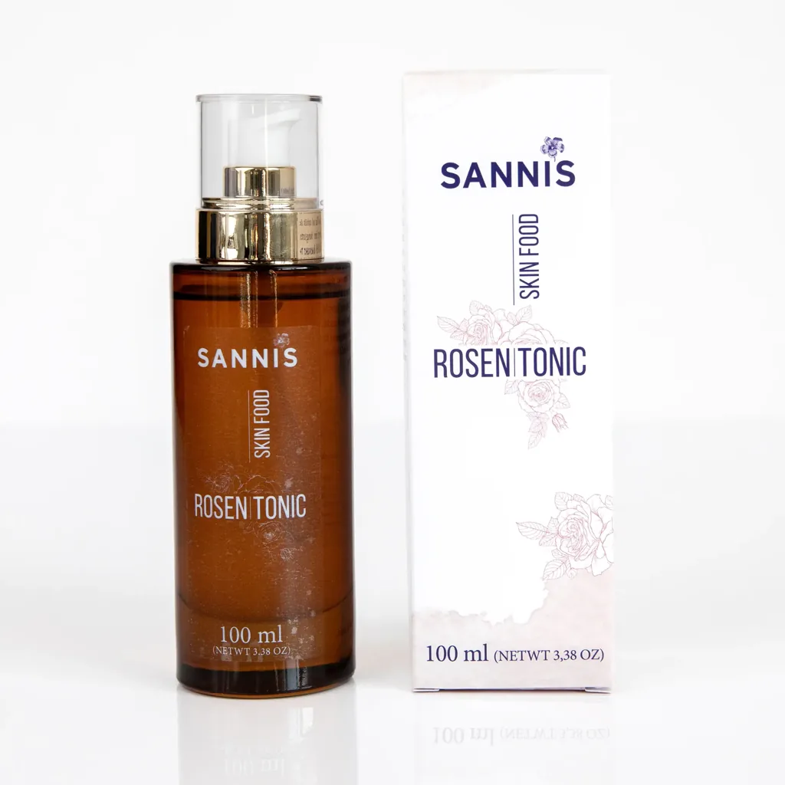
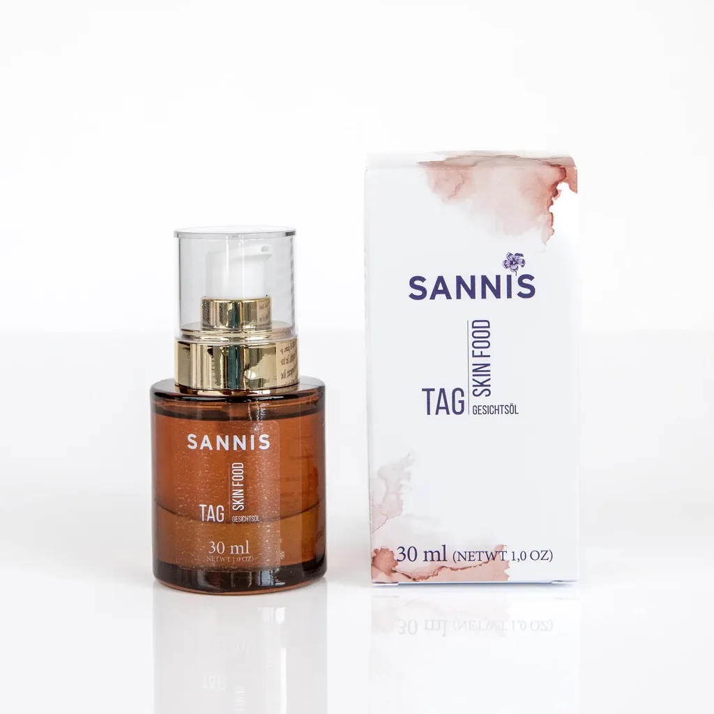
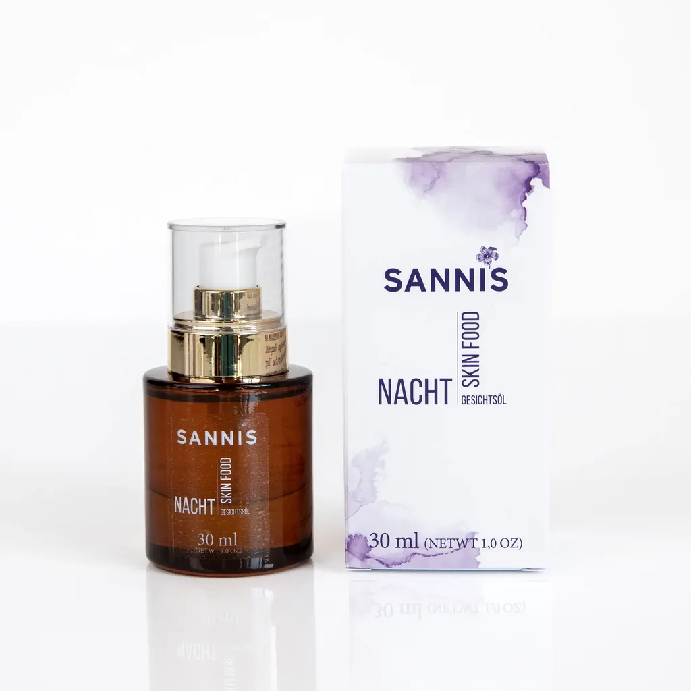

Es gibt diesen Moment in unserer Alpin Manufaktur in Wald am Arlberg, auf den wir uns jedes Mal freuen: wenn das frisch gepresste Bio-Leinöl golden aus der Presse läuft und der feine, nussige Duft durch den Raum zieht. Seit Jahren begleitet uns dieses Öl durch den Alltag, und irgendwann war klar: Was uns am Frühstückstisch so guttut, verdient auch einen Platz in der Hautpflege. Gerade trockene Haut, die nach dem Waschen spannt und an kalten Tagen rau wird, freut sich über ein Gesichtsöl mit Bio-Leinöl. Für trockene Haut heißt das: ein kaltgepresstes Gesichtsöl auf Basis von Bio-Leinöl, aufgetragen in die noch feuchte Haut nach dem Rosentonic. Das Tonic bringt die Feuchtigkeit, das Öl pflegt mit Lipiden und hält sie in der Haut. Wie diese Routine ganz ohne Creme auskommt, liest du hier.
● Das Wichtigste in Kürze
- Bio-Leinöl als Herzstück: Bio-Leinöl besteht zu über 55 % aus der Omega 3 Fettsäure Alpha-Linolensäure und ist die Basis unserer Gesichtsöle, ergänzt um ausgewählte Begleitöle.
- Öl und Feuchtigkeit gehören zusammen: Gesichtsöl pflegt mit pflanzlichen Lipiden, Feuchtigkeit bringt es selbst nicht mit. Die kommt aus dem Rosentonic, das Öl schließt sie danach ein.
- Die Öl-Routine: Reinigungsöl, Rosentonic, dann zwei bis vier Tropfen Gesichtsöl in die noch feuchte Haut. Eine Creme brauchst du dafür meist nicht.
- Tag und Nacht: Das Tagesöl ist leicht und zieht schnell ein, das Nachtöl ist reichhaltiger. Beide stehen auf Bio-Leinöl.
- Geduld lohnt sich: Das geschmeidige Gefühl spürst du beim Auftragen. Wie sich deine Haut insgesamt anfühlt, zeigt die regelmäßige Pflege über einige Wochen.
Die Öl-Routine für trockene Haut: Rosentonic, dann Tagesöl oder Nachtöl auf Basis von Bio-Leinöl.
Welches Gesichtsöl passt zu trockener Haut?
Als Gesichtsöl für trockene Haut eignet sich ein kaltgepresstes, naturbelassenes Pflanzenöl, das die Haut mit pflanzlichen Lipiden versorgt und angenehm einzieht. Unser Favorit ist Bio-Leinöl: Es besteht zu über 55 % aus der pflanzlichen Omega 3 Fettsäure Alpha-Linolensäure und ist herrlich dünnflüssig. In einem Gesichtsöl kombiniert, etwa mit Jojoba- oder Marulaöl, verteilt es sich leicht und hinterlässt ein geschmeidiges Hautgefühl. Genau diese Kombination steckt in unserem Skin Food Tagesöl für den Tag und im reichhaltigeren Skin Food Nachtöl für den Abend.
Trockener Haut fehlen hauteigene Lipide, also die feinen Öle, die die oberste Hautschicht geschmeidig halten und dafür sorgen, dass Feuchtigkeit in der Haut bleibt. Fehlen sie, fühlt sich die Haut rau und matt an, spannt über den Tag und reagiert empfindlicher auf Heizungsluft und Kälte. Mit den Jahren bildet die Haut zudem weniger Talg, und die gewohnte Pflege reicht dann oft nicht mehr.
Ein Gesichtsöl versorgt die Haut mit pflanzlichen Lipiden in konzentrierter Form, pur und ohne Emulgatoren. Wenige Tropfen genügen, und schon beim Auftragen fühlt sich die Haut weich und umsorgt an.
Warum Bio-Leinöl? Unsere Liebe zu einem besonderen Öl
Bio-Leinöl gehört zu den Pflanzenölen mit dem höchsten Anteil an Omega 3: Über 55 % unseres Öls sind Alpha-Linolensäure. Dazu kommt Linolsäure, eine Fettsäure, die ein natürlicher Baustein der hauteigenen Lipide ist. Auf der Haut sorgen diese mehrfach ungesättigten Fettsäuren für ein geschmeidiges, gepflegtes Hautgefühl. Deshalb ist Bio-Leinöl die Basis unserer Gesichtsöle.
Dass Linolsäure in den Lipiden der Hautbarriere eine wichtige Rolle spielt, beschreibt zum Beispiel eine Übersichtsarbeit zu den Hautlipiden (Pappas, Dermato-Endocrinology 2009). Für uns ist Bio-Leinöl aber noch viel mehr als Fettsäuren, es ist eine Herzensangelegenheit. In unserer Manufaktur in Wald am Arlberg pressen wir es schonend unter 29 Grad, Austria Bio zertifiziert (AT-BIO-301). Dasselbe frisch kaltgepresste Bio-Leinöl, das viele unserer Kundinnen und Kunden morgens im Topfen genießen, steckt auch in unserer Skin Food Pflege. Wir nennen das Nahrung für die Haut. Unser Bio-Leinöl kommt dafür frisch aus der eigenen Presse.
Kann man Bio-Leinöl dann einfach pur aus der Küche ins Gesicht geben? Möglich ist das, pur fühlt sich Bio-Leinöl auf der Gesichtshaut aber spürbarer an als in einer Mischung. Deshalb ergänzen wir es in unseren Gesichtsölen um ausgewählte Begleiter, die das Hautgefühl abrunden und den Duft aus natürlichen ätherischen Ölen tragen. Wie Bio-Leinöl ganz allgemein auf der Haut wirkt, erzählen wir ausführlich im Beitrag über Bio-Leinöl für die Haut.
Trockene Haut oder durstige Haut? Der feine Unterschied
Trockener Haut fehlen hauteigene Lipide, durstiger Haut fehlt Feuchtigkeit. Ein Gesichtsöl versorgt die Haut mit Lipiden, Wasser enthält es selbst keines. Es legt sich als zarter Film auf die Haut und bremst die Verdunstung. Deshalb gehört vor das Öl immer ein Schritt, der Feuchtigkeit bringt, zum Beispiel ein Rosentonic.
Die Kosmetik unterscheidet beides, die Medizin fasst es unter trockener Haut zusammen: Laut dem Gesundheitsportal des Bundes fehlen ihr Lipide und feuchtigkeitsbindende Stoffe. Für die Pflege hilft die Trennung trotzdem, denn sie erklärt, warum Gesichtsöl bei manchen wunderbar funktioniert und anderen „nicht reicht":
- Ein Hauttyp, oft schon lange so
- Raue Stellen, feine Schüppchen, matter Teint
- Eher feine, kaum sichtbare Poren
- Spannt den ganzen Tag über
- Freut sich über Gesichtsöl
- Ein Zustand, kann jeden Hauttyp treffen
- Spannt vor allem direkt nach dem Waschen
- Feine Trockenheitsfältchen, vor allem nach dem Waschen
- Kann gleichzeitig glänzen
- Freut sich über Rosentonic, das Öl hält die Feuchtigkeit
Im Alltag treffen beide oft zusammen, gerade im Winter. Die Antwort ist in beiden Fällen dieselbe Kombination: erst Feuchtigkeit, dann Öl. Das Rosentonic gibt der Haut zu trinken, das Gesichtsöl hält die Feuchtigkeit fest und pflegt mit Lipiden.
Die Öl-Routine für trockene Haut: Reinigungsöl, Rosentonic, Gesichtsöl
Die Öl-Routine hat drei Schritte: Zuerst reinigst du mit einem Reinigungsöl, das die Haut nicht austrocknet. Dann sprühst du das Rosentonic großzügig auf Gesicht und Hals. Zum Schluss arbeitest du zwei bis vier Tropfen Gesichtsöl in die noch feuchte Haut ein. So schließt das Öl die Feuchtigkeit ein.
- Sanft reinigen. Heißes Wasser und stark schäumende Reiniger können der Haut zusätzlich Lipide entziehen. Unser Skin Food Reinigungsöl auf Basis von Bio-Leinöl löst Make-up und Alltagsschmutz und hinterlässt ein geschmeidiges Hautgefühl. Einfach in das trockene Gesicht einmassieren, mit etwas warmem Wasser emulgieren und abspülen.
- Feuchtigkeit schenken. Das Skin Food Rosentonic ist reines Bio-Rosenwasser aus Damaszener Rosen, ohne Zusatz von Duftstoffen. Es erfrischt, bringt Feuchtigkeit auf die Haut und bereitet sie auf das Öl vor. Großzügig auf Gesicht, Hals und Dekolleté sprühen und nicht trocknen lassen.
- Öl einarbeiten. Zwei bis vier Tropfen Gesichtsöl zwischen den Handflächen anwärmen und sanft in die noch feuchte Haut drücken. Auf der leicht feuchten Haut zieht das Öl schneller ein und fühlt sich leichter an.
Morgens kommt bei Sonne ein Sonnenschutz als letzter Schritt dazu.

Der perfekte Partner fürs Gesichtsöl: das Rosentonic
Reines Bio-Rosenwasser aus Damaszener Rosen · erfrischt und spendet Feuchtigkeit · bereitet die Haut auf das Öl vor · 100 % vegan · Bio Austria zertifiziert.
Gesichtsöl oder Creme? Warum die Öl-Routine reicht
Für viele Menschen mit trockener Haut ersetzt die Kombination aus Rosentonic und Gesichtsöl die Creme. Eine Creme verbindet Wasser und Öl in einer Emulsion. Genau diese beiden Bausteine liefert auch die Öl-Routine, nur in zwei klaren Schritten: das Rosentonic die Feuchtigkeit, das Gesichtsöl die Lipide. Das Ergebnis ist eine reduzierte Pflege mit wenigen, gut verständlichen Zutaten.
- Feuchtigkeit und Lipide in zwei klaren Schritten
- Kurze, transparente Zutatenlisten
- Kommt ohne Emulgatoren aus
- Sehr ergiebig, wenige Tropfen genügen
- Wasser und Öl in einem Produkt
- Braucht Emulgatoren, damit beides verbunden bleibt
- Praktisch, wenn es schnell gehen soll
- Lipidanteil je nach Rezeptur unterschiedlich
Wer seine Creme liebt, muss nicht auf sie verzichten: Das Gesichtsöl lässt sich auch darunter auftragen oder mit zwei, drei Tropfen hineinmischen. Für trockene Haut ist die reine Öl-Routine aber oft der einfachere und angenehmere Weg.
Gesichtsöl morgens oder abends? Tagesöl und Nachtöl
Gesichtsöl kannst du morgens und abends verwenden. Morgens genügt eine sparsame Menge, damit die Haut nicht glänzt und Make-up gut hält. Abends darf es großzügiger und reichhaltiger sein, weil die Haut über Nacht zur Ruhe kommt. Deshalb haben wir zwei Gesichtsöle auf Basis von Bio-Leinöl entwickelt, die sich in ihren Begleitölen und im Hautgefühl unterscheiden.
Pflicht ist eine getrennte Tag- und Nachtpflege nicht, sinnvoll aber schon: Tagsüber soll das Öl schnell einziehen und unter Make-up funktionieren, nachts darf es reichhaltiger sein. So unterscheiden sich unsere beiden Öle laut Produktseiten:
| Tagesöl | Nachtöl | |
|---|---|---|
| Basis | Bio-Leinöl aus der eigenen Presse | Bio-Leinöl aus der eigenen Presse |
| Begleitöle (Auswahl) | Marula, Wildrose, Jojoba, Mandel, Sanddorn | Marula, Jojoba, Argan, Granatapfelsamen |
| Hautgefühl | leicht, zieht schnell ein | reichhaltig, seidig weich |
| Duftnoten | Rosengeranie, Rose, Grapefruit | Rose, Ylang Ylang, Grapefruit |
| Menge | 2 bis 3 Tropfen | 3 bis 4 Tropfen |
| Wann | morgens, auch unter Make-up | abends nach dem Rosentonic |
Das Skin Food Tagesöl ist dein leichter Begleiter für den Tag: Es zieht schnell ein und lässt sich gut unter Make-up tragen. Das Skin Food Nachtöl ist reichhaltiger und schenkt am Abend ein seidig weiches Hautgefühl, mit Duftnoten, die den Tag ruhig ausklingen lassen. Der Duft beider Öle kommt aus natürlichen ätherischen Ölen.

Leicht für den Tag: das Skin Food Tagesöl
Bio-Leinöl mit Marula-, Wildrosen- und Jojobaöl · zieht schnell ein, auch unter Make-up · Duft aus natürlichen ätherischen Ölen · volle INCI auf der Produktseite.
Typische Fehler bei Gesichtsöl und trockener Haut
Die häufigsten Fehler sind zu viel Öl, Öl auf trockener statt feuchter Haut und eine Reinigung, die der Haut mehr Lipide nimmt, als das Öl zurückgeben kann. Wer diese drei Punkte beachtet, kommt mit wenigen Tropfen am Tag aus.
Zwei bis vier Tropfen reichen für Gesicht und Hals: morgens zwei bis drei Tropfen Tagesöl, abends drei bis vier Tropfen Nachtöl. Glänzt die Haut nach zehn Minuten noch, war es zu viel. Ohne Feuchtigkeit darunter fehlt dem Öl außerdem sein Partner: Die Haut fühlt sich dann zwar weich an, spannt aber bald wieder. Und heißes Wasser mit stark schäumenden Reinigern kann gerade die Lipide lösen, die trockener Haut ohnehin fehlen. Lauwarm und mild ist besser.

Pflegetipps rund um Gesichtsöl, Bio-Leinöl & Skin Food, Neues aus der Manufaktur und exklusive Specials, mit einer Portion Alpen-Lebensgefühl direkt in deine Inbox.
Häufige Fragen zu Gesichtsöl bei trockener Haut
Welches Gesichtsöl ist gut für trockene Haut?
Gut geeignet ist ein kaltgepresstes, naturbelassenes Gesichtsöl, das die Haut mit Lipiden versorgt und angenehm einzieht. Unsere Gesichtsöle stehen auf Bio-Leinöl mit über 55 % Omega 3 Fettsäure Alpha-Linolensäure, ergänzt um Begleitöle wie Jojoba- und Marulaöl für ein geschmeidiges Hautgefühl.
Spendet Gesichtsöl Feuchtigkeit?
Nein, Öl enthält kein Wasser. Es versorgt die Haut mit Lipiden und legt sich als zarter Film auf die Haut, der die Verdunstung bremst. Deshalb wirkt es am besten auf feuchter Haut, etwa direkt nach dem Rosentonic.
Kommt Gesichtsöl vor oder nach der Creme?
Wer eine Creme verwendet, trägt das Öl meist darunter auf die feuchte Haut auf oder mischt zwei bis drei Tropfen direkt hinein. Bei trockener Haut brauchst du die Creme aber oft gar nicht: Rosentonic und Gesichtsöl liefern zusammen Feuchtigkeit und Lipide.
Wie viele Tropfen Gesichtsöl braucht man?
Für Gesicht und Hals reichen zwei bis vier Tropfen: morgens zwei bis drei Tropfen Tagesöl, abends drei bis vier Tropfen Nachtöl. Glänzt die Haut nach zehn Minuten noch deutlich, war es zu viel.
Kann Gesichtsöl die Creme ersetzen?
Ja, in Kombination mit einem Tonic, das die Feuchtigkeit liefert. Viele, die eine reduzierte Pflege möchten, kommen mit Reinigungsöl, Rosentonic und Gesichtsöl aus.
Kann ich Bio-Leinöl pur als Gesichtsöl verwenden?
Möglich ist das. Pur fühlt sich Bio-Leinöl auf der Gesichtshaut aber spürbarer an als in einer Mischung. In unseren Gesichtsölen ergänzen Begleitöle wie Jojobaöl das Bio-Leinöl, damit es angenehm einzieht. Mehr dazu liest du in unserem Ratgeber zu Bio-Leinöl auf der Haut.
Verstopft Gesichtsöl die Poren?
Wie ein Öl auf die Poren wirkt, hängt stark von der eigenen Haut ab. Wer zu Unreinheiten neigt, beginnt mit wenigen Tropfen am Abend und beobachtet, wie die Haut reagiert. Bei trockener Haut ist das Thema meist weniger relevant als bei öliger Haut.
Ist Gesichtsöl auch für empfindliche Haut geeignet?
Das hängt von der Rezeptur ab. Achte auf eine kurze, verständliche Zutatenliste. Unsere Gesichtsöle enthalten für den Duft natürliche ätherische Öle wie Rosengeranie und Grapefruit. Neigt deine Haut zu Rötungen oder reagiert sie auf Duftstoffe, prüf vorab die INCI-Liste auf der Produktseite, teste das Öl an einer kleinen Hautstelle und starte abends mit zwei Tropfen.
Fazit: Love, Life and Shine, mit ein paar Tropfen Bio-Leinöl
Gesichtsöl bei trockener Haut ist eine kleine Liebeserklärung an die eigene Haut. Mit Bio-Leinöl als Herzstück, dem Rosentonic als Partner und ein paar Minuten am Morgen und am Abend wird daraus ein Moment, auf den man sich freut. Das Öl pflegt mit Lipiden, das Rosentonic bringt die Feuchtigkeit, und gemeinsam bleibt die Haut geschmeidig.
Love, Life and Shine: So leben wir bei SANNIS, und genau diese Freude stecken wir in jede Flasche. Unsere Pflege beginnt an der eigenen Presse in Wald am Arlberg, mit frisch gepresstem Bio-Leinöl und ehrlicher Begeisterung für dieses wunderbare Öl. Probier es aus, morgens oder abends, und spür, wie gut sich ein paar Tropfen Pflanzenkraft anfühlen.

Reichhaltig für die Nacht: das Skin Food Nachtöl
Bio-Leinöl mit Argan-, Marula- und Granatapfelsamenöl · reichhaltige Pflege für trockene Haut am Abend · perfekt nach dem Rosentonic · versandkostenfrei in AT & DE.